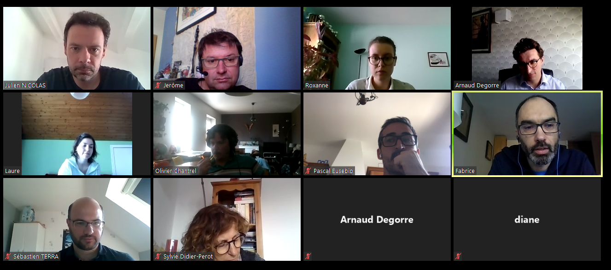

Les acteurs du projet
Qui sommes-nous ?
Un groupe de joyeux lurons, assurément ! Mais aussi, à l'occasion, des statisticiens, géomaticiens, économistes et autres "datascientists" intéressés par les questions de pédagogie...
- Insee, DSI, Unissi : Arnaud Degorre, arnaud.degorre@insee.fr
- Insee, DSI, projet Palettes : Jean-Luc Lipatz, jean-luc.lipatz@insee.fr
- MTES, Sylvie Didier-Perot, sylvie.didier-perot@developpement-durable.gouv.fr
- MTES, DREAL Pays-de-la-Loire, Maël Theulière, mael.theuliere@developpement-durable.gouv.fr
- MTES, Jérôme Baret , jerome.baret@developpement-durable.gouv.fr
- MTES, Olivier Chantrel, olivier.chantrel@developpement-durable.gouv.fr
- Insee, CEFIL, Julien Nicolas, julien.nicolas@insee.fr
- Insee, DR Nouvelle Aquitaine, Laure Genebes, laure.genebes@insee.fr
- Insee, DR PACA, Pascal Eusébio, pascal.eusebio@insee.fr
- Insee, DR Centre Val de Loire, Sébastien Terra, sebastien.terra@insee.fr
- Insee, DR Hauts de France, Fabrice Danielou, fabrice.danielou@insee.fr
- ThinkR - Diane Beldame, diane@thinkr.fr
- ThinkR - Vincent Guyader, vincent@thinkr.fr
Un aperçu d'une partie de l'équipe, à l'occasion d'une Webconf pendant la période de confinement :

Remerciements
Nous remercions l'ensemble des acteurs qui nous ont fait confiance dans la réalisation de ce projet, et qui nous ont épaulé dans cette aventure.
Au sein de l'Insee, la démarche a été pilotée par la Direction du système d'information au sein de l'Unité Innovation et stratégie du SI. Elle a été suivie et soutenue par un groupe d'acteurs associant le directeur du projet Insee 2025, les acteurs de formation continue (le CEFIL, Centre de formation de l'Insee à Libourne, et la division Formation) et des directions régionales (Nouvelle-Aquitaine, Provence Alpes Côte d'Azur, Haut-de-France, Centre Val de Loire). Le projet a d'emblée profité de la participation du ministère de la Transition écologique et solidaire, avec le Commissariat général au développement durable (CGDD) et le Service de la donnée et des études statistiques (SDES).
La société ThinkR, spécialisée dans la formation R en France, nous a accompagnés tout au long du périple d'icaRius. Développeurs et consultants expérimentés, passionnés et contributeurs open source, les formateurs thinkR ont apporté à la fois leur sensibilité pédagogique et leur expertise technique. Les contenus de leurs formations font la part belle à la pratique, dans un état d'esprit « learning by doing » que l'on retrouve également dans la philosophie du funcamp R. En particulier, thinkR promeut une approche dite « cake first », qui consiste à outiller aussi rapidement et efficacement que possible les stagiaires en s’affranchissant de détails techniques ou superflus - ce que nous avons également retenu pour construire les chapitres du grimoire IGoR.
Pour en savoir plus sur thinkR : https://thinkr.fr/
Nous remercions également la communauté Solarus pour son accueil et son aide. Grâce à la richesse des ressources proposées en ligne, avec des packs de ressources, des tutoriels vidéos, un forum très actif, l'appropriation des bases du moteur de jeu "from scratch" a pu se faire dans le calendrier du projet. Merci en particulier à christopho, l'auteur du moteur Solarus, et Diarandor, pour leurs premiers conseils. A l'issue de ce premier prototype de funcamp, un travail partenarial pourra être proposé à la communauté Solarus, désormais structurée sous forme d'association, pour améliorer le code du jeu et en proposer une version complètement open source.
Pour en savoir plus sur Solarus : https://www.solarus-games.org/